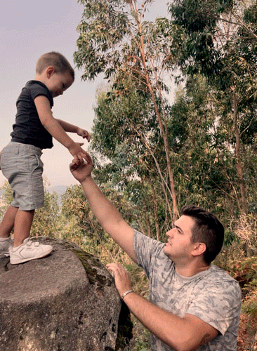

Images edited with Photoshop. In file I clicked in Scripts and Load files into stack. I selected my images, previously saved for web with a height of 500px. In the timeline, I pressed Create frame animation and Make frame from each layer. I changed the number of times the gif will play (forever) and the timing to 0.2 seconds, except the last frame set at 0,5 seconds to focus the attention of the kid happiness. I created the animated GIF by exporting the file for web as GIF and adaptive colour palette.
